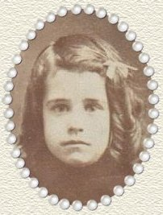

| Rosario
is born on January 20, 1897, at 1096 rue Saint-Antoine,
Saint-Henri. His parents are Alphonse
Jr. and Marie Lavoie. His godparents are Alphonse Charette Sr.
and Rosianne Miron, his paternal grandparents.
Rosario is the third of nine children. All his sisters and
brothers but one die in infancy.
His father is a property owner and masonry contractor. At seventeen Rosario loses his mother and, two years later, his father. In 1924 his younger brother Alexandre dies as well. The family network, grandparents, uncles and aunts, cousins, surrounds Rosario, since they all live in Saint-Henri. |
|||||||||
| Marie-Anna Caron is born
on April 27, 1897, at 54 rue Delinelle in Saint-Henri. Her parents, Arthur Caron and Alphonsine Gagnon, were
born in the Bas-du-Fleuve (the lower St. Lawrence). They married in 1891 in Montréal and already have a son, Jean, born on October 11, 1893. Marie-Anna's other brother, Antonio, is born on October 26, 1899. Then, in 1901, another brother named Arthur, but he dies the following year. Marie-Anna's father is a tinsmith. |
 |
||||||||
|
|||||||||
A FEW WORDS ABOUT MARIE-ANNA'S FAMILY On October 31, 1904, Marie-Anna's young life is turned upside down: her father dies at the age of 37. The family goes on living at 54 Delinelle, St-Henri. It is from the 1911 census that we learn how Alphonsine made a living. She gives her occupation as "laveuse pour des particuliers" (laundress for private clients). In other words, she washes other people's laundry at home, starches it if needed, and irons it. Her customers must be the better-off people of the neighbourhood. Commercial laundries only appear the following decade. From the same census we also learn that Jean, the eldest son, aged 17, works as a "chartier" (carter). He works 60 hours a week, 52 weeks a year, and earned $350 the year before. Most of that money surely goes to his mother, as was the custom at the time. On September 13, 1913, Alphonsine marries
again, to Zénon Laframboise, a carpenter, recently widowed. She has
no doubt known him for some years, since Zénon, his wife Célina
Jasmin and his daughter Marguerite, born in February 1900, have lived close by,
at 455 rue Ste-Émélie, since at least 1908. Alphonsine
and her children move in with.
Zénon.
|
|||||||||
|
MARIE-ANNA AND HER BROTHERS Jean (official name: Joseph), Marie-Anna's older brother, marries Hélène Vilemaire, daughter of Hormisdas and Catherine Sarault, on May 27, 1919, in St-Zotique parish. They had no children. He worked in printing and lived in Verdun, in a handsome, well-to-do house full of souvenirs of a trip Jean made to Japan and Asia as a young man (André's recollection). He and his wife take an ocean liner for a trip to Europe in the late 1950s. Jean dies in 1976, and his wife the following year. Antonio (official name: Antoine), a taxi driver, lived for a long time with a separated woman who had a daughter (Ghislaine's recollection). In those days, that way of life made him an outcast from society and from his family. He was allowed to visit his family only alone. There was no question of his bringing his companion. Divorce does not exist, children born out of wedlock have no legal status, and "accotés" (common-law) couples cannot show themselves in public; social convention forbids it. They are a disgrace to their families. Research in the
BMS2000 database tells us that Antoine marries Éva Lamontagne
on October 6, 1970, in Sherbrooke. She is surely
the common-law partner he had lived with for so long.
|
|||||||||
| FRIENDS
FOR LIFE
All her life Marie-Anna has good friends; some even appear in the group photos at her children's weddings. Her friendship with one of them, Imelda Verreault, goes back to childhood. They were both born in 1897 and were neighbours, Marie-Anna living at 54 and Imelda at 63 rue Delinelle. Imelda is the first to marry, to a Mr. Henri Philippe. In 1916 Marie-Anna sends them her best wishes for the new year and invites them to her wedding the following month. Mr. Philippe will be the accountant of Rosario's garage, Marie-Anna's husband. Imelda's daughter, Rachel, will marry one of Marie-Anna's sons, Rosaire. Later Imelda will live for many years at 7078 Des Écores, one of the flats that had once belonged to Marie-Anna. Imelda dies in 2002 at the age of 104.
|
|||||||||
|
|
|||||||||